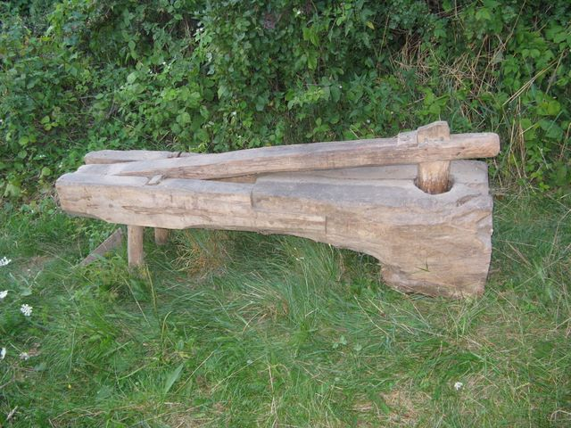

Stêpa no¿na
T³uczek ( stêpor) by³ przymocowany do drewnianego dr±ga pe³ni±cego role wagi.
Naciskaj±c nog± wagê tl³uczek unosi³ siê, a po zwolnieniu nacisku opada³ mia¿dz±c zbo¿e.
Pierwsze stêpy pojawi³y siê w Polce w XI wieku.
Pierwszy |
Poprzednie zdjêcie |
Nastêpne zdjêcie |
Ostatni | Miniatury
